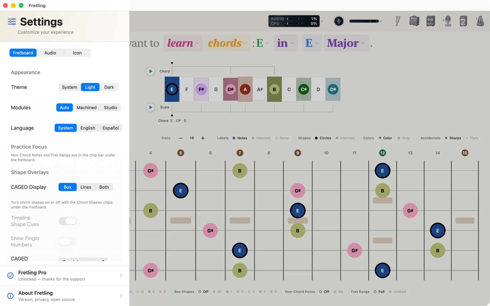
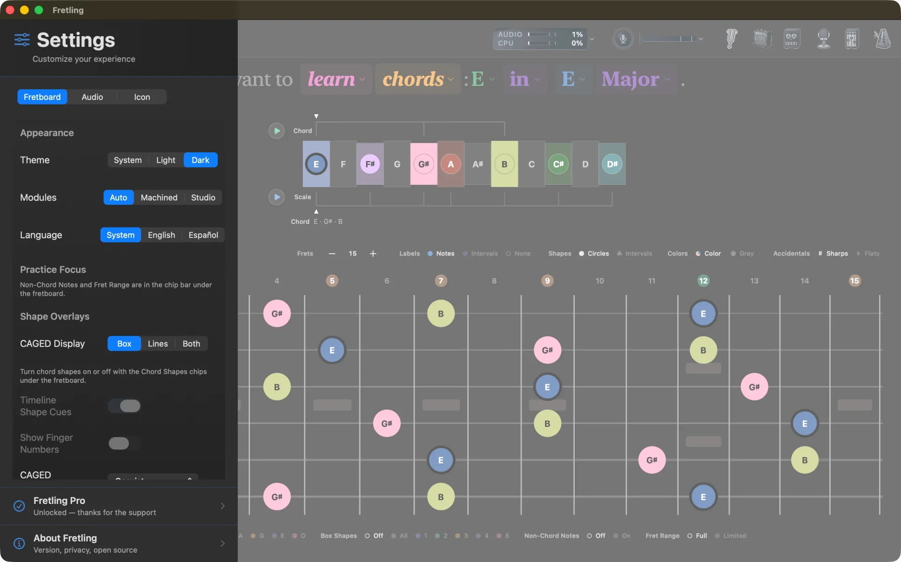
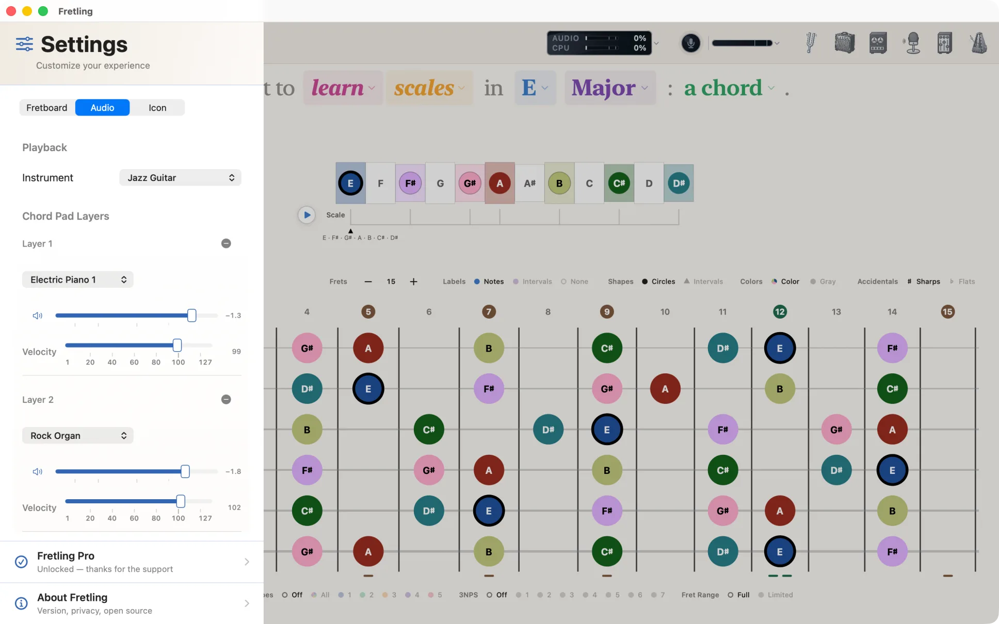
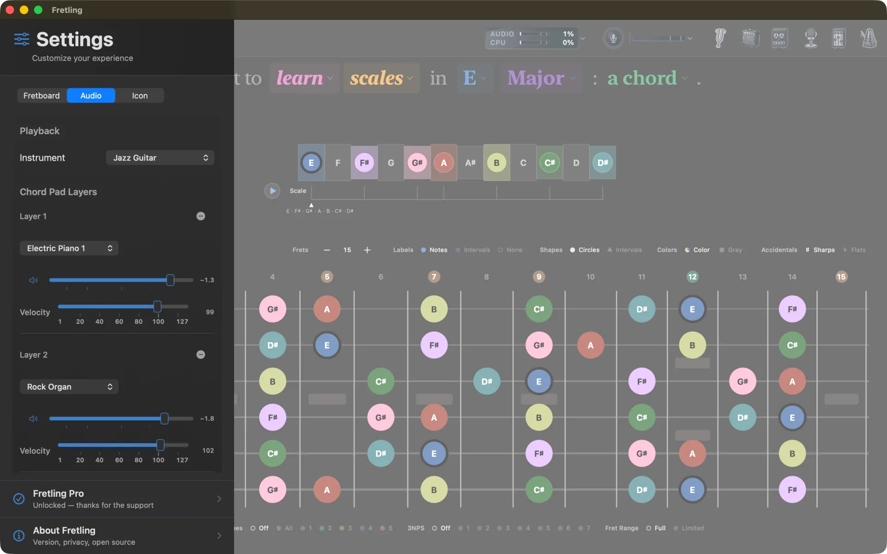
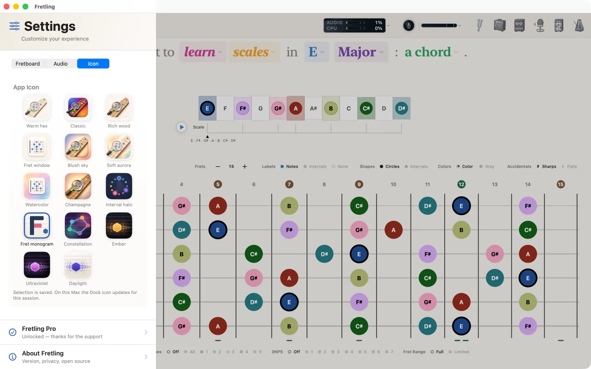
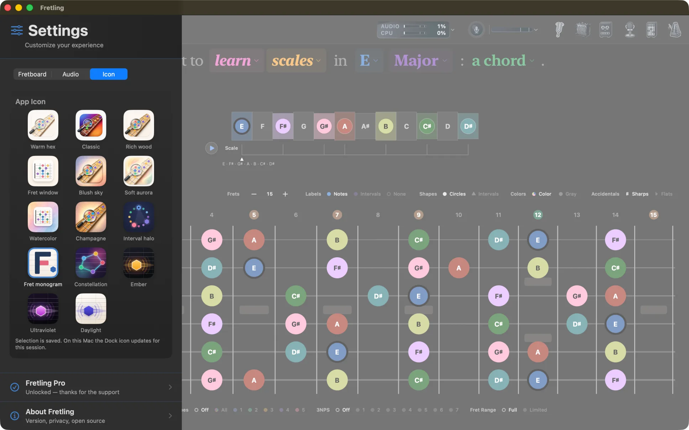
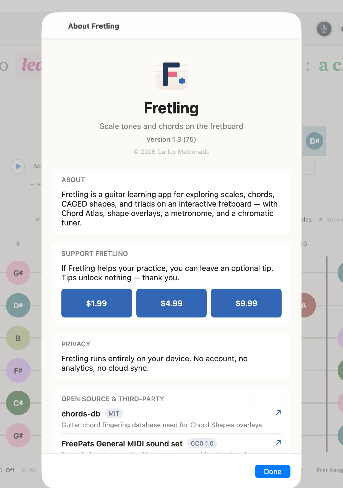
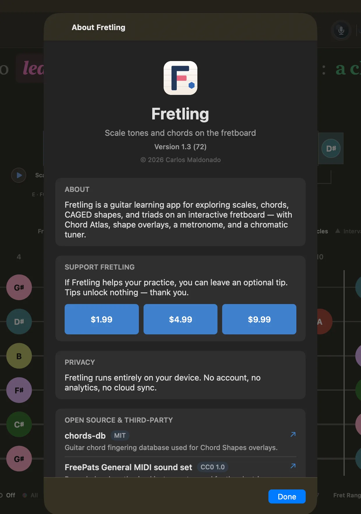

Settings
The settings sidebar slides in from the left, opened with the button in the top-left corner. It has three tabs — Fretboard, Audio, and Icon — and a link to About at the bottom.
Not everything lives in here. The settings you change constantly sit on the chip bars that bracket the neck: marker display above it, Visual Groupings below it. The sidebar holds the things you set once and leave alone.
Fretboard tab
Four groups, some of which appear only in the modes they apply to. Options that do not apply right now are dimmed rather than hidden, so the sidebar does not rearrange itself under you.


Appearance
| Setting | Options | Description |
|---|---|---|
| Theme | System / Light / Dark | Follow the device appearance, or pin Fretling to light or dark. |
Borrowed Harmony
| Setting | Options | Description |
|---|---|---|
| Secondary Dominants | Toggle | Adds the secondary dominants of the key (V7/ii, V7/V and so on) to the chord picker. These are seventh-quality chords, so switching this on also enables advanced chords. |
| Modal Interchange | Toggle | Adds chords borrowed from the parallel mode. |
Marker settings are not here — labels, shapes, colors and accidentals all live on the marker display bar above the neck, where they stay visible while you play.
Practice Focus
| Setting | Options | Description |
|---|---|---|
| Show Non-Chord Notes | Toggle | Keeps the rest of the scale visible under an active chord. Available in Chords mode, and in Scales mode when a chord is selected; dimmed otherwise. |
| Limit Fret Range | Toggle | Shows the fret range limiter below the neck. |
| Show Triad Boxes | Toggle | Triads mode only. Outlines each triad position. |
Shape Overlays
| Setting | Options | Description |
|---|---|---|
| CAGED Display | Box / Lines / Both | How a CAGED shape is drawn: region outline, connecting lines through its notes, or both. |
| Show Chord Shapes | Toggle | Chords mode. Draws playable fingerings for the selected chord on the neck. |
| Timeline Shape Cues | Toggle | Also marks the shape's tones on the timeline. Requires Show Chord Shapes. |
| Show Finger Numbers | Toggle | Prints finger numbers on chord shapes. Requires Show Chord Shapes. |
| CAGED Interaction | Coexist / Exclusive / Replace CAGED | Chords mode. What happens when chord shapes and CAGED are both on — draw both, let shapes take over while they are on, or have shapes replace CAGED entirely (which also removes the CAGED chips from Visual Groupings). |
The whole Shape Overlays group is dimmed while you are identifying a chord — there is no key to lay a shape against.
Audio tab
Playback
| Setting | Options | Description |
|---|---|---|
| Instrument | Acoustic Piano, Acoustic Guitar (Nylon), Acoustic Guitar (Steel), Jazz Guitar, Clean Electric Guitar, Sine Wave | The voice used when you tap notes on the neck. Sine Wave is synthesised; the rest come from a General MIDI SoundFont. |
Chord Pad Layers
Chords can be voiced by stacking up to three instruments, which is how you get a pad behind a chord rather than one flat sample. Each layer has its own instrument, volume, and mute; Add Layer adds one, up to the maximum.
Layers apply to chord playback — the Chord chip beside the timeline, Chord Atlas previews, and progression playback. Tapping single notes always uses the Instrument setting above.


Icon tab
Fretling ships fourteen app icons; pick one and the home screen or Dock icon changes. The choices are Warm hex, Classic, Rich wood, Fret window, Blush sky, Soft aurora, Watercolor, Champagne, Interval halo, Fret monogram, Constellation, Ember, Ultraviolet, and Daylight. Each is shown as a preview tile before you commit.


About and tips
At the bottom of the sidebar, About Fretling opens a screen with the version and build number, a plain-language privacy summary, and credits for the open-source components Fretling is built on — the chord fingering database, the SoundFont used for instrument playback, and the Neural Amp Modeler engine with its dependencies.
The About screen also holds an optional tip jar. Tips are ordinary in-app purchases handled by Apple, in three sizes. They unlock nothing — every feature is available whether or not you ever tip.

